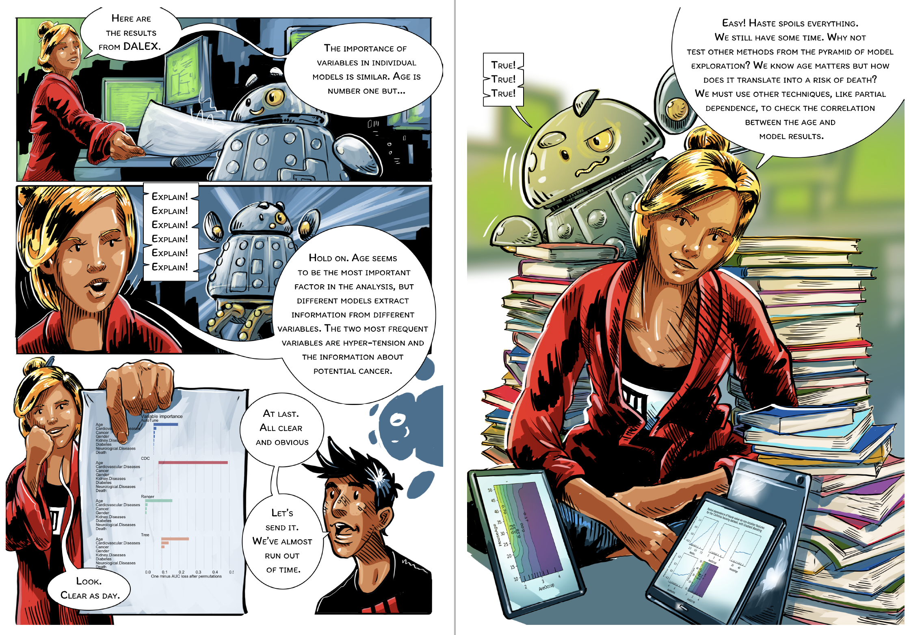
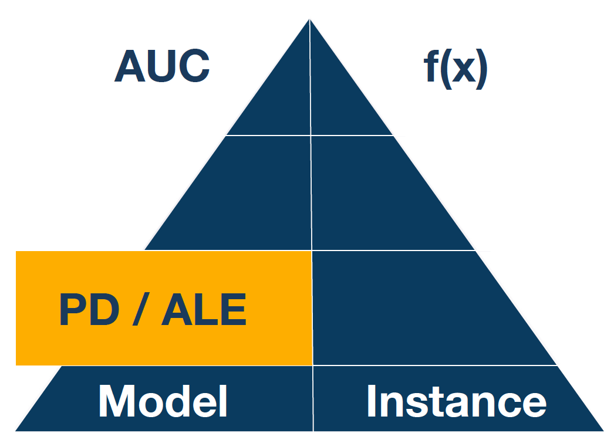
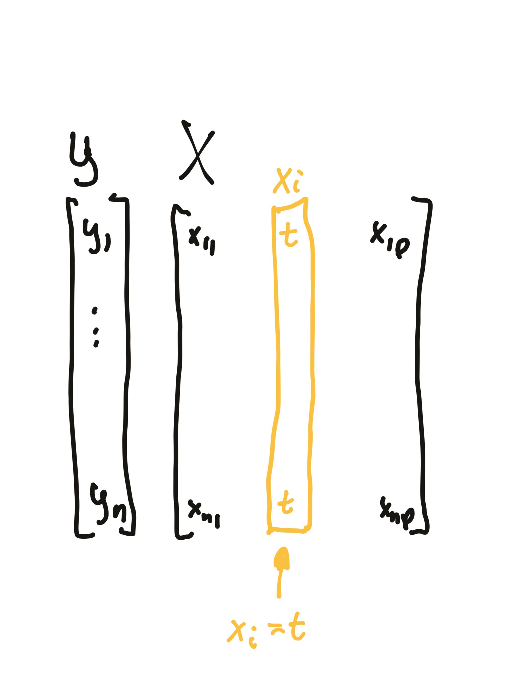
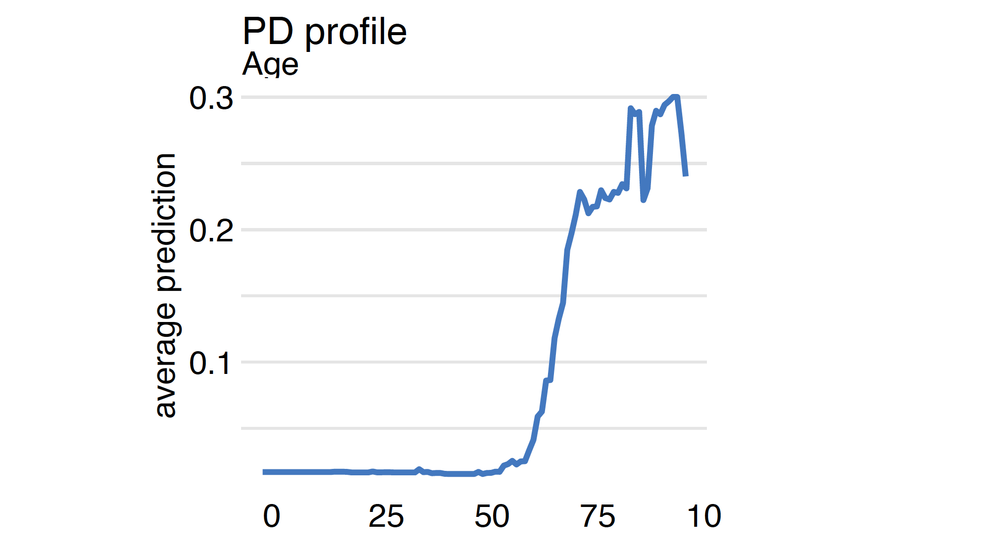
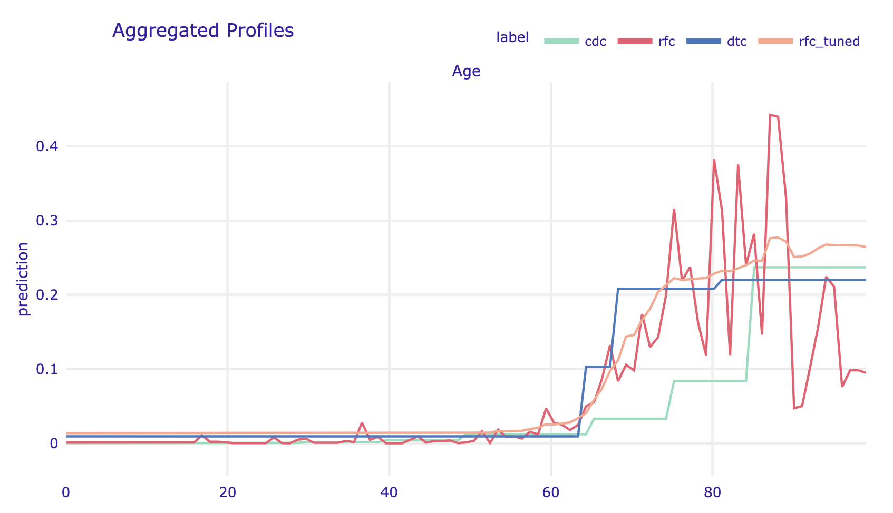
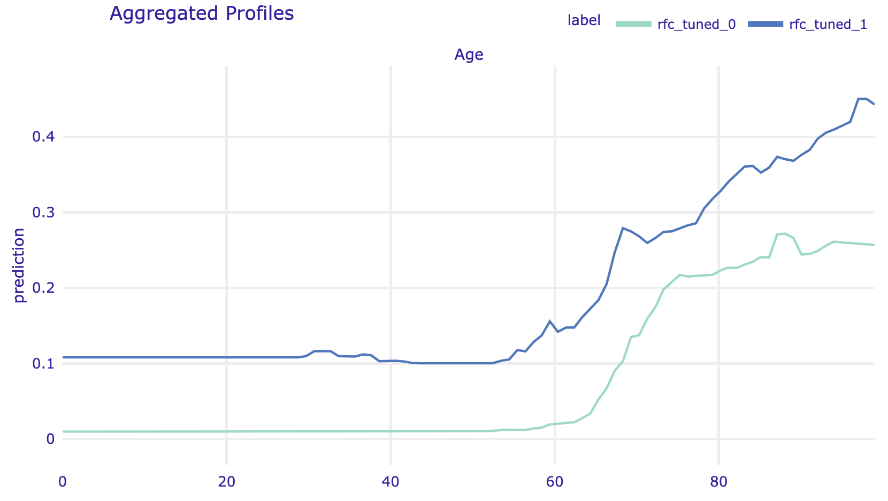
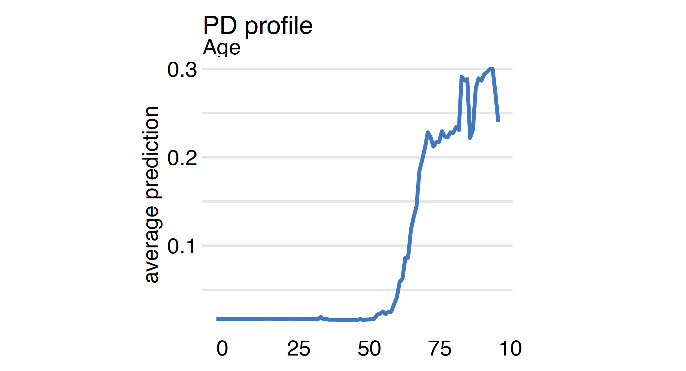
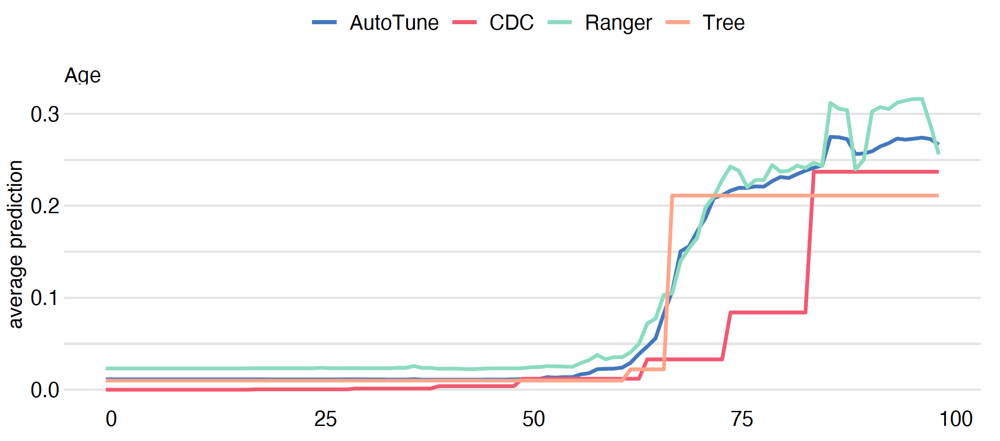
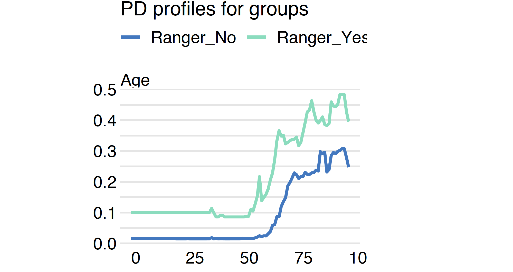
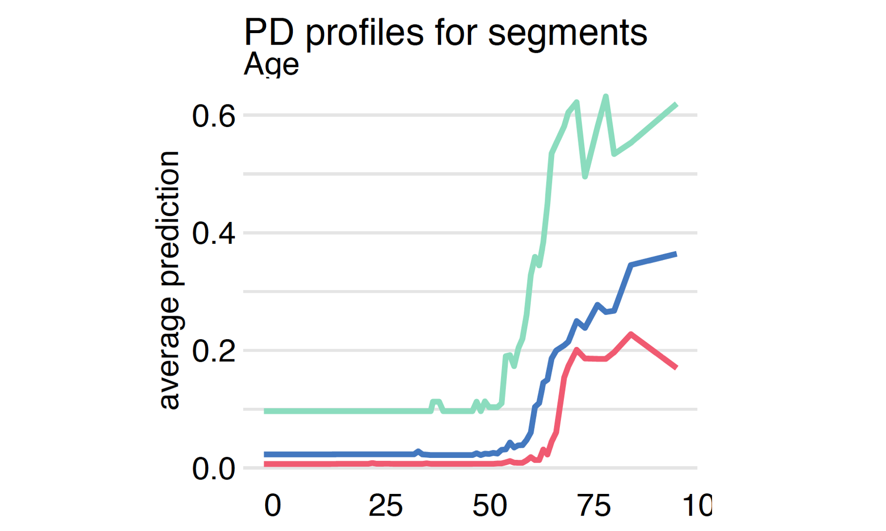

profile_rfc = explainer_rfc.model_profile(variables="Age")
profile_rfc.plot(show=False)Step 7. Partial Dependence and Accumulated Local Effects


Once we know which variables are important, it is usually interesting to determine the relationship between a particular variable and the model prediction. Popular techniques for this type of Explanatory Model Analysis are Partial Dependence (PD) and Accumulated Local Effects (ALE).
PD profiles were initially proposed in 2001 for gradient boosting models but can be used in a model agnostic fashion. This method is based on analysis of average model response after replacing variable \(i\) with the value of \(t\).
Both methods are described in detail in Chapter 17 of the Explanatory Model Analysis
More formally, Partial Dependence profile for variable \(i\) is a function of \(t\) defined as
\[ PD(i, t) = E\left[ f(x_1, ..., x_{i-1}, t, x_{i+1}, ..., x_p) \right], \]
where the expected value is calculated over the data distribution. The straightforward estimator is
\[ \widehat{PD}(i, t) = \frac 1n \sum_{j=1}^n f(x^j_1, ..., x^j_{i-1}, t, x^j_{i+1}, ..., x^j_p). \]

In the data set, the variable \(i\) is replaced by the value \(t\), then an average model response is calculated.
Replacing \(i\)-th variable by value \(t\) can lead to very strange observations, especially when \(i\)-th variable is correlated with other variables and we ignore the correlation structure. One solution to this are Accumulated Local Effects profiles, which average over the conditional distribution.
Analysis of the Partial Dependence profile for each variable carries a lot of useful information. However, keep in mind that in complex models, you should expect complex interactions. Thus, one global profile for a variable may be an oversimplification. An extension of PD profiles is to calculate them in subgroups defined by some other variables or based on segments of observations found from model responses. You will find some examples below.
Python snippets
We use the model_profile method from the dalex package to calculate the variable profile. The only required argument is the model to be analyzed. It is a good idea to specify names of variables for profile estimation as a second argument; otherwise, profiles are calculated for all variables, which can take some time. One can also specify the exact grid of values for calculations of profiles.
The average is calculated for the distribution specified in the data argument in the explainer. Here we calculate the PD profiles for the Age variable for covid_summer data.

Since we have four models it is worth comparing how they differ in terms of the model’s response to the Age variable.
profile_cdc = explainer_cdc.model_profile(variables="Age")
profile_dtc = explainer_dtc.model_profile(variables="Age")
profile_rfc_tuned = explainer_rfc_tuned.model_profile(
variables="Age")
profile_cdc.plot([profile_rfc, profile_dtc,
profile_rfc_tuned], show=False)
covid_spring data are more likely to place the dramatic increase in the risk around age 65. The tree model is too shallow to capture the ever-increasing risk in the oldest group. Despite this, the models are quite consistent about the general shape of the relationship.Grouped Partial Dependence profiles
By default, the average is calculated for all observations. But with the argument one can specify a grouping variable. PD profiles are calculated independently for each level of this variable.
grouped_profile_rfc_tuned = explainer_rfc_tuned.model_profile(
variables="Age", groups="Diabetes")
grouped_profile_rfc_tuned.plot(show=False)
R snippets
We use the model_profile function from the DALEX package to calculate the variable profile. The only required argument is the model to be analyzed. It is a good idea to specify names of variables for profile estimation as a second argument; otherwise, profiles are calculated for all variables, which can take some time. One can also specify the exact grid of values for calculations of profiles.
The average is calculated for the distribution specified in the data argument in the explainer. Here we calculate the PD profiles for the Age variable for covid_summer data.
mp_ranger <- model_profile(model_ranger, "Age")
plot(mp_ranger)
Since we have four models it is worth comparing how they differ in terms of the model’s response to the Age variable.
mp_cdc <- model_profile(model_cdc, "Age")
mp_tree <- model_profile(model_tree, "Age")
mp_tuned <- model_profile(model_tuned, "Age")
plot(model_cdc, model_tree, mp_ranger, model_tuned)
Grouped Partial Dependence profiles
By default, the average is calculated for all observations. But with the argument groups one can specify a grouping variable. PD profiles are calculated independently for each level of this variable.
mgroup_ranger <- model_profile(model_ranger, "Age",
groups = "Diabetes")
plot(mgroup_ranger)
Clustered Partial Dependence profiles
If the model is additive, then individual profiles (see the next Section related to profiles) are parallel. But if the model has interactions, individual profiles may have different shapes for different values of variables in each interaction. To see if there are such interactions we can cluster the individual profiles.
If we specify the argument k, then the function model_profile performs a hierarchical clustering of the profiles, determines the group of k most different profiles and then calculates the Partial Dependence for each of these groups separately.
mclust_ranger <- model_profile(model_ranger, "Age",
k = 3, center = TRUE)
plot(mclust_ranger)